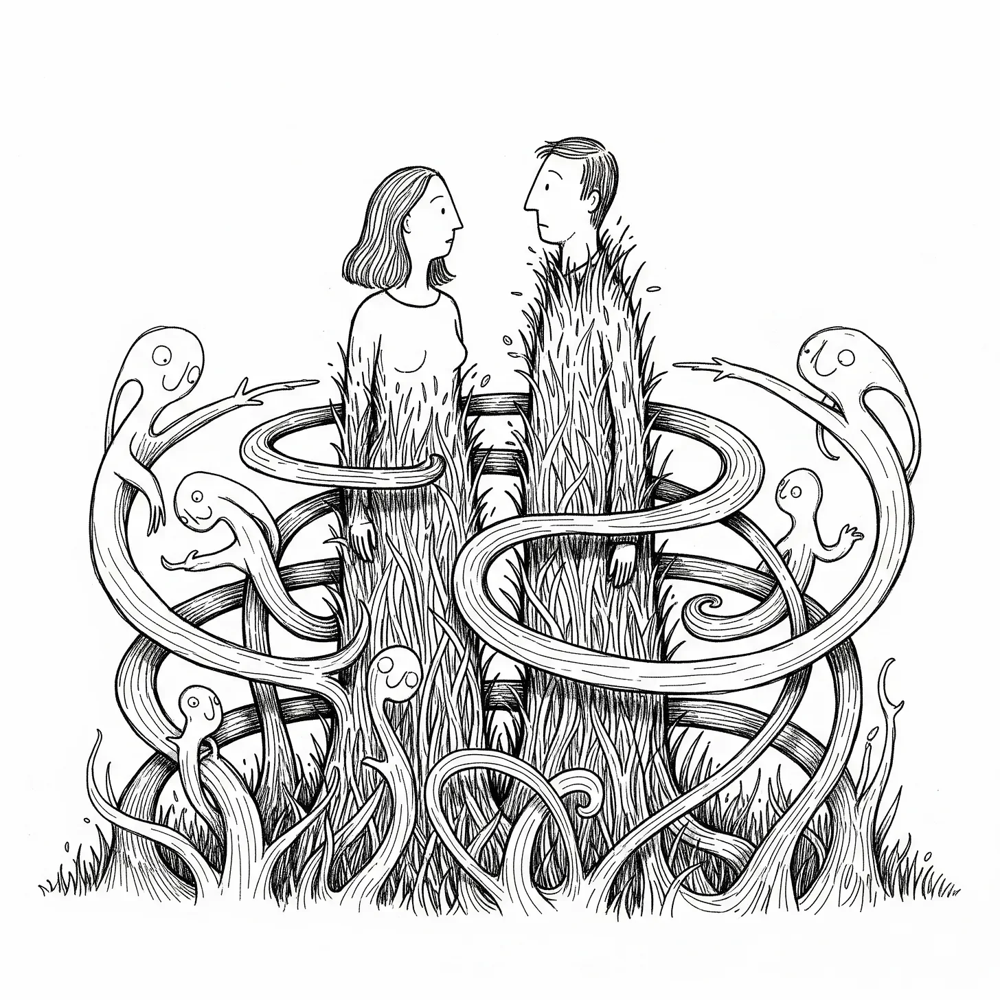

에밀리아가 잔디가 걸어 다니는 것을 처음 본 아침, 그녀는 별로 대수롭지 않게 여겼다. 산 이시드로의 잊혀진 계곡에서는 현실이 항상 가장자리에서 구부러지곤 했으니까, 마치 오래된 사진이 시간이 지나며 말리는 것처럼. 그녀는 마테를 한 모금 마셨다. 잔디 잎들이 뿌리를 뽑고, 작은 녹색 다리가 자라나더니 마당을 가로질러 행진하고 있었다.
[On the morning Emilia noticed the grass was walking, she thought little of it. Reality had always bent at the edges in the forgotten valleys of San Isidro, like an old photo curling with time. She sipped her mate as blades of grass uprooted themselves, tiny green legs sprouting at their base, marching across her yard.]
“베가,” 그녀는 이웃에게 소리쳤다, 염소를 묶고 있는 중이었다. “이거 보여?”
[“Vega,” she called to her neighbor, tying up his goats. “You see this?”]
베가는 늘 그렇듯 말없이 고개를 끄덕였다. 하지만 그의 눈에는 에밀리아가 한 번도 본 적 없는 무언가가 서려 있었다—두려움.
[Vega, quiet as ever, only nodded. His eyes, though, betrayed something Emilia had never seen in him—fear.]
정오가 되자, 들판은 초록빛 바다처럼 물결쳤고, 잔디의 물결이 서쪽으로 이주했다. 아이들은 웃으며 잔디를 쫓았지만, 부모들은 침묵한 채 긴장했다. 노인 퀴로가가 처음으로 입을 열었다.
[By noon, fields rippled like green oceans, waves of grass migrating west. The children laughed, chasing the blades, but their parents stood silent, tense. Old Man Quiroga was the first to voice it.]
“전부 마르티네스 농장 쪽으로 움직이는구먼.”
[“They’re all moving toward the Martínez farm.”]
해가 지기 시작하며 불타는 듯한 빛이 파도치는 초록빛 들판을 덮을 때, 공기는 불안으로 점점 더 무거워졌다. 마을 사람들은 광장에 모였고, 로살레스 시장은 질서를 유지하려고 했지만 실패했다. “진정들 하세요,” 그는 더듬거리며 말했지만, 그의 얼굴에는 땀이 흘러내리고 있었다. 그러나 진정은 서쪽에서 첫 비명이 들리자마자 산산조각이 났다.
[As the sun began to set, casting a fiery glow over the undulating green, the air thickened with unease. The town gathered in the square, Mayor Rosales trying and failing to keep order. “Stay calm,” he stammered, though his face dripped sweat. Calm, however, crumbled with the first screams from the west.]
다음 날 아침 에밀리아는 마을 끝에 서 있었고, 베가는 그녀 곁에 있었다. 그들 앞에는 잔디로 이루어진 살아있는 벽이 있었다. 들판이 있던 자리는 이제 꿈틀대는 초록빛 덩어리로 가득 찼다. 마르티네스 농장은 그 움직이는 초록빛 너머로 사라졌고, 그곳에서 풍겨오는 침묵은 어제의 비명보다 더 크게 느껴졌다.
[Emilia stood at the edge of town the next morning, Vega by her side. Before them was a living wall of grass, a writhing mass where the fields had once stretched. The Martínez farm was lost behind that shifting green, and the silence it exuded was louder than the screams had been.]
“우린 반대편에 뭐가 있는지 봐야 해,” 에밀리아가 말했다.
[“We need to see what’s on the other side,” Emilia said.]
그들은 잔디 언덕을 기어올랐고, 잔디는 마치 스스로 생각하는 것처럼 발걸음을 거부하며 그들의 발에 얽혔다. 정상에 올랐을 때, 그들은 멈춰 섰다. 마르티네스 농장은 불가능한 형태의 미로로 변해 있었다—잔디 기둥이 토네이도처럼 소용돌이치며 하늘로 끝없이 솟아올랐다. 그리고 그 중심에는 심장처럼 뛰는 초록빛 덩어리가 있었다.
[They climbed the hill of grass, the blades resisting their steps like they had minds of their own, tangling at their feet. Cresting the top, they froze. The Martínez farm had become a labyrinth of impossible forms—columns of grass spiraled like tornadoes, rising impossibly into the sky. And at the center, a throbbing mass of green, pulsing like a heartbeat.]
그때 그들은 형체를 보았다. 인간의 모습을 한 비틀린 형상들이 잔디에 뒤덮여, 기이하게 우아한 움직임으로 미로를 지나가고 있었다.
[Then they saw the figures. Twisted, human shapes, overtaken by grass, moving through the labyrinth with eerie grace.]
“디오스 미오,” 베가가 속삭였다. “그들이 뭘로 변한 거지?”
[“Dios mío,” Vega whispered. “What have they become?”]
에밀리아가 대답하기도 전에 잔디의 덩굴이 그녀의 다리를 잡아채며 초록빛 덩어리 속으로 끌고 갔다. 그녀가 들은 마지막 소리는 베가의 외침이었다. 그 초록빛 속 어둠에서, 잔디가 속삭였다—말이 아닌, 거대한 고대의 사상들이었다, 마치 시간보다 더 오래된 언어처럼. 땅 자체가 깨어나 있었다.
[Before Emilia could answer, tendrils of grass snatched at her legs, pulling her into the mass. Vega’s shout was the last thing she heard as she was swallowed by the green. In the darkness, the grass whispered—not words, but ideas, vast and ancient, like a language older than time. The earth itself was awake.]
그녀가 눈을 떴을 때, 그녀는 지하의 동굴에 서 있었다. 벽은 초록빛으로 빛나고 있었다. 베가는 그녀 곁에 있었고, 그의 눈은 휘둥그레졌다. 그들 주위에는 잔디 인간들이 모여 있었고, 그들의 형체는 인간과 식물 사이를 오가며 깜빡거렸다.
[When she opened her eyes, she stood in a cavern beneath the ground, walls glowing with green light. Vega was beside her, his eyes wide. Around them, the grass-people gathered, their forms flickering between human and plant.]
한 발 앞으로 나선 것은 노인 퀴로가의 비틀린 잔상 같은 얼굴을 하고 있었다. “땅이 스스로를 다시 만들고 있다,” 그것이 말했다. 목소리는 마치 나뭇잎 사이로 스치는 바람 같았다. “너희도 우리와 함께할 것이다.”
[One stepped forward, its face a twisted echo of Old Man Quiroga. “The earth is remaking itself,” it said, its voice like wind through leaves. “You will join us.”]
에밀리아는 그 끌림이 더 깊어지는 것을 느꼈다. 이제는 낯선 것이 아니라 익숙한 감각이었다, 마치 오래된 기억이 그녀 안에서 깨어나는 듯했다. 저항하려는 욕구는 사라지고, 그 자리에 조용한 이해가 찾아왔다. 그녀는 베가를 바라보며 그의 손을 잡았고, 이번에는 두려움이 없었다.
[Emilia felt the pull deepen, no longer strange but familiar, like an ancient memory waking inside her. The urge to resist faded, replaced by a quiet understanding. She looked at Vega, her hand slipping into his, and this time, there was no fear.]
“우린 이제 여기에 속한 거야,” 그녀가 속삭였다, 목소리는 부드럽고 확신에 차 있었다.
[“We belong to this now,” she murmured, her voice soft, certain.]
베가의 손이 더 강하게 움켜잡혔다, 망설임이 아닌 받아들임으로. 그는 고개를 끄덕였고, 그의 몸에 있던 긴장이 풀리면서 뿌리들이 그들의 다리 주위로 감겨들었다. 이제는 위협이 아닌 환영이었다. 그들 아래 땅은 살아있는 것처럼 느껴졌고, 따뜻했다. 마치 그들을 기다리고 있었던 것처럼.
[Vega’s grip tightened, not in hesitation but in acceptance. He nodded, the tension in his body easing as the roots curled around their legs, no longer threatening but welcoming. The earth beneath them felt alive, warm, as if it had been waiting for them all along.]
말없이 그들은 초록빛에 자신을 맡겼다, 적이나 침입자가 아닌, 새로운 무엇으로. 뿌리가 그들의 피부를 통과하고 땅의 속삭임이 더 크게 들리자, 에밀리아는 깊은 평온함이 그녀를 감싸는 것을 느꼈다. 이제 그녀와 베가는 더 이상 외부인이 아니었다—그들은 땅의 맥박, 세상이 다시 만들어지는 리듬의 일부가 되었다.
[Without another word, they let the green envelop them, not as enemies or intruders, but as something new. As the roots wove through their skin and the whispers of the earth grew louder, Emilia felt a profound calm wash over her. She and Vega were no longer outsiders—they were part of the pulse, the rhythm of the world remaking itself.]
그들은 변화를 받아들였고, 잔디와 땅과 하나가 되어, 더 이상 어디서 그들의 몸이 끝나고 땅이 시작되는지 구분할 수 없었다. 그들은 두려움이 아닌 목적을 가지고 경계를 넘었다. 옛 것과 새 것 사이의 길을 걷는 첫 번째 존재로서.
[They embraced the change, merging with the grass, with the land, until they could no longer tell where their bodies ended and the earth began. They had crossed the threshold, not with fear, but with purpose, as the first of many to walk the path between the old and the new.]